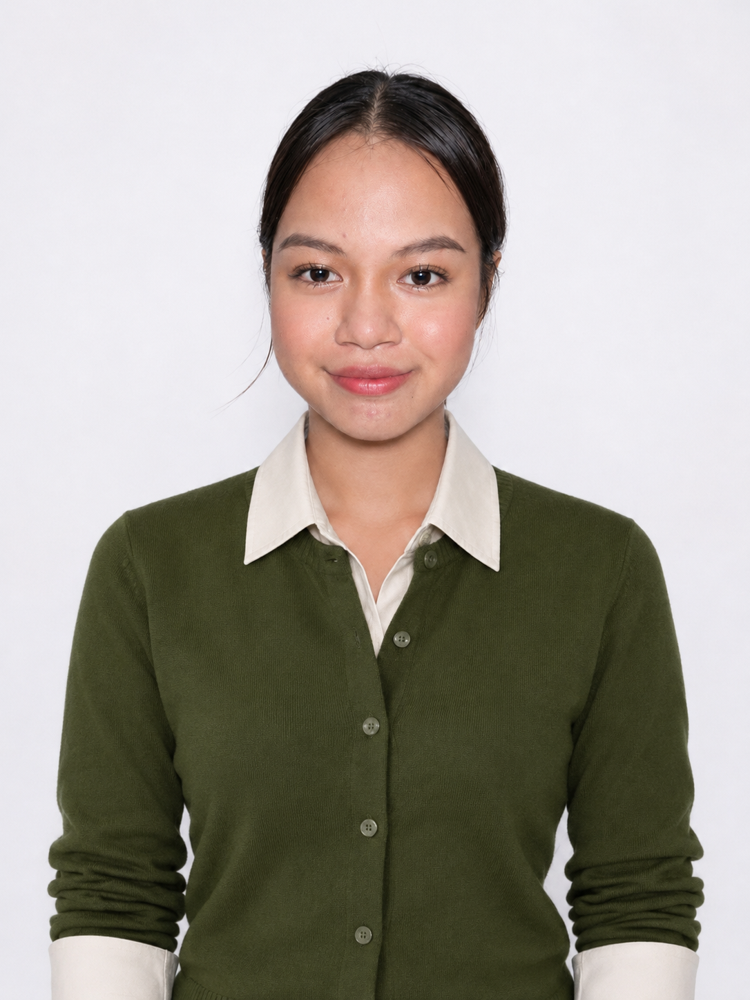

GET TO KNOW ME
Personal Information
My background, present studies, interests, developing skills, values, and career direction.
Explore my profile ↗PERSONAL PORTFOLIO · 2026
I am Ejelyn Cudal Garin — a curious learner, an aspiring IT professional, and a work in progress, always finding new ways to learn, grow, and serve.
“Use Knowledge to Serve.”
Still dreaming.Still learning.Still growing.Still becoming.

WELCOME TO MY PORTFOLIO
This website is a reflection of my journey so far: the experiences that shaped me, the people who support me, and the goals that continue to guide me.
My path has not been perfectly straight. Changing direction taught me that beginning again is not the same as starting from nothing. Every experience can become part of the person I am learning to be.
As I continue studying Information Technology, I hope to build skills that allow me to contribute thoughtfully, protect people in digital spaces, and use knowledge responsibly.
A SNAPSHOT OF MY JOURNEY
GET TO KNOW ME
My background, present studies, interests, developing skills, values, and career direction.
Explore my profile ↗MY FOUNDATION
A tribute to my parents and the support, lessons, and encouragement that matter to me.
Read the tribute ↗MILESTONES
Academic recognition, leadership, school involvement, and experiences that helped me grow.
View milestones ↗LOOKING AHEAD
I believe growth is not only about reaching a destination. It is also about staying curious, learning from experience, and choosing to move forward with purpose.
Discover my direction ↗